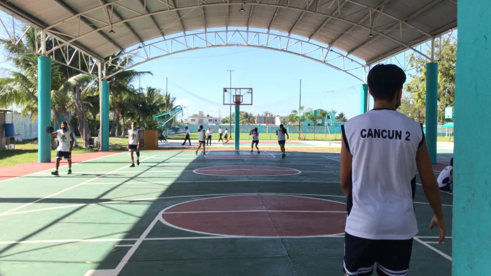
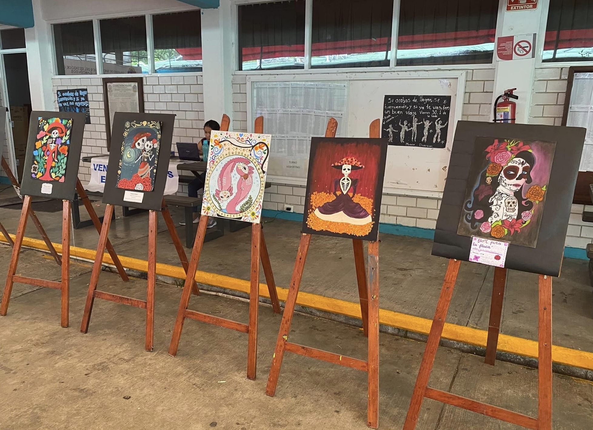
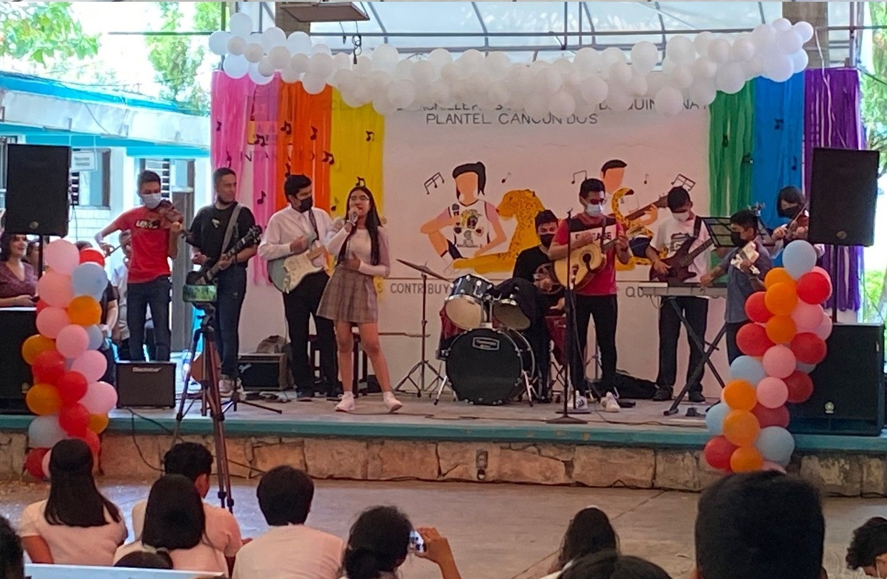
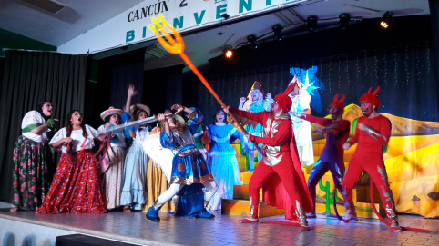
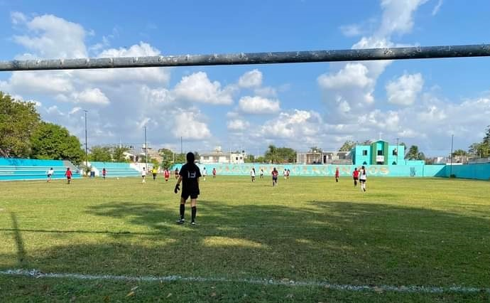
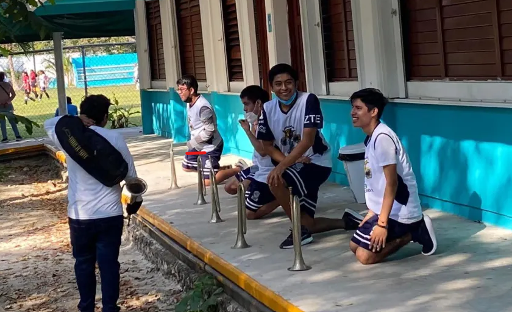
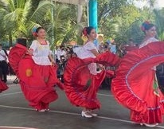
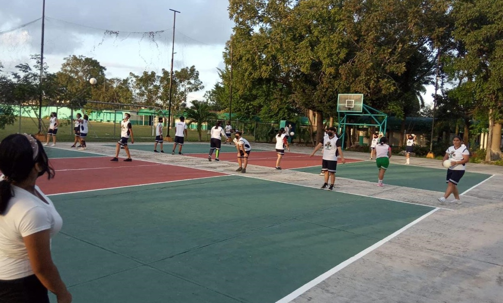
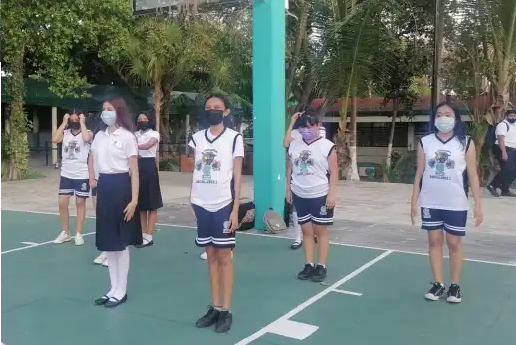

Básquetbol

Es un deporte en equipo que se puede desarrollar tanto en pista cubierta como en descubierta, en el que por equipos de 5 jugadores cada uno, intenta anotar canastas introduciendo un balón a un aro.
En este paraescolar enseñan movimientos básicos del básquetbol, se realizan investigaciones acerca de este deporte y sus reglas, con el fin de tener una idea de cómo es y al momento de llevarlo a la práctica no empiezen de cero. Los alumnos del turno matituno llevan el paraescolar en la tarde y los del turno vespertino lo llevan en la mañana, de tal forma que este no afecte en sus actividades académicas.
Pintura

Una de las ramas del arte visual, en donde se podrá apreciar las maravillosas obras hechos por los alumnos, en esta sección esta dedicada a todo tipo de arte tanto la física como las plásticas, también esta el que le da en nombre el de pintura y sus derivados, lo que mas requieres es el gusto a este paraescolar o mejor dicho a los dibujos, pinturas, esto y mas podrás encontrar.
Este paraescolar tiene el objetivo de enseñarles a sus alumnos sobre el arte, específicamente la pintura, cada semestre se usan materiales algo diferentes aunque siempre relacionados al arte.
Música
 Este paraescolar proporciona a los estudiantes conocimientos básicos, realizando actividades interactivas, prácticas y dinámicas, ofrece la posibilidad de que los alumnos accedan a craciones musicales y sean ellos mismos los productores de manifestaciones artísticas donde la imaginación y creatividad están presentes. Realizan ejercicios desde vocales hasta de instrumentos, organizan pequeños "conciertos" donde la comunidad escolar puede asistir a ver lo que han aprendido. Fomenta la creatividad, abriendo nuevas vías de expresión y contribuyendo al desarrollo de competencias básicas, sirve para expresar, unir, fortalecer, motivar, apoyar, inspitar, revolucionar, movilizar, armonizar, cantar, bailar, soñar y reír.
Teatro
 En teatro las clases suelen ser didácticas y entretenidas, se realizan ejericios de improvisación sobre los temas vistos. El ambiente es bueno ya que los mismos alumnos interactuan entre ellos y los maestros, aunque suelen ser exigentes, son comprensivos y motivan a los alumnos resolviendo las dudas que vayan surgiendo. En general este paraescolar es bueno, ya que ayuda a los alumnos a expresarse más, a salir de su zona de confort pero sobre todo a divertirse en todo momento. Requiere de mucho trabajo, pues no es fácil actuar pero la manera en que se lleva a cabo es buena y anima a los alumnos a quitarse ese miedo y demostrar su potencial.
Fútbol
 El fútbol es uno de los deportes más recomocidos, promoviendo la unión a la hora de jugar en equipo, poder lograr saber liderar y sobre la diversión con el fin de estresarse y tener un rato de actividad. Los alumnos suelen realizar ejercicios de calentamiento antes de empezar a jugar para no sufrir de alguna lesión; se dividen en equipos y se enfrentan entre sí, conforme vayan perdiendo van entrando otros equipo de tal forma que todos puedan jugar. tiene como objetivo principal es proporcionar el nivel medio una educación formativa e integral en las practicas de actividades de paraescolar las cuales se han agrupado considerando aspectos del desarrollo humano de los compañeros.
Banda de Guerra
 La banda de guerra son conjuntos de personas que se desempeñan en realizan toques y marchas militares, se integran por tambores y cornetas. Es un paraescolar que sirve para entender los conceptos de disciplina y conocimientos al momento de tocar los intrumentos musicales (corneta y tambor), se lleva a cabo en las canchas del plantel y se suelen dividir en dos grupos, el primer grupo con la corneta y el segundo con el tambor. Tiene como objetivo fomentar y rendir honores a los símbolos patrios del país, sirve para elevar el nivel físico, funcional y moral, además de tener un alto nivel competitivo en concursos, exhibiciones e inauguraciones de eventos y homenajes.
Danza
 La danza fue una de las primeras manifestaciones artísticas de la humanidad, es una forma de hacer arte y expresar lo que sentimos mediante los movimientos corporales. El paraescolar se lleva a cabo en una especie de domo pequeño con espejo para ensayar coreografías. Su clasificación se divide en dos: la danza popular o folclóricas la cual se basa en la transimisión de la cultura tradicional, expresada con valores de alguna cultura en particular usando elementos ontextuales como ambiente (animales, tierra, vegetación, entre otros) y la danza moderna caracterizada por ser practicas en los últimos años por jóvenes llevando todo tipo de identidad social a través de la forma de entender la vida e incluso el vestir.
Voleibol
 Es un deporte que requiere de compañerismo para trabajar en equipo a un ritmo rápido, su objetivo es lograr anotar puntos con los pases de la pelota hacia el campo adversario, cosa que el equipo rival tratará de impedir con jugadas como ataque, boleos o toques. Los alumnos realizan ejercicios de calentamiento como trotar, correr, saltos de lado, realizar zancadas, volear, golpes bajos, etc., para fortalecer los brazos y las piernas y poder realizar los ejercicios como pegar el balón, posiciones y saques. También realizan aprenden cosas de teorías como las partes que conforman a la cancha, como acomodar las manos al momento de hacer golpes bajos, entre otras cosas. Jugar voleibol puede mejorar la confianza en sí mismo y la autoestima en su vida en general.
Escolta
 Es un grupo de alumnos del colegio que tienen la responsabilidad de realizar marchas, con el objetivo de resguardar, cuidar y proteger a la bandera nacional durante los desfiles, izamientos, arriamientos y actos en su honor. Realizan ejercicios sencillos como calentamientos básicos para después empezar con los ejercicios de práctica. El propósito principal de este paraescolar es reafirmar el sentido nacional y el fervor patrio, fortaleciendo la práctica de las obligaciones cívicas y generar en los alumnos bases firmes de respeto a los símbolos patrios. La experiencia de un alumnos en este paraescolar es muy agradable, ya que se trata de un equipo disciplinado, constante, trabajador y muy unido.